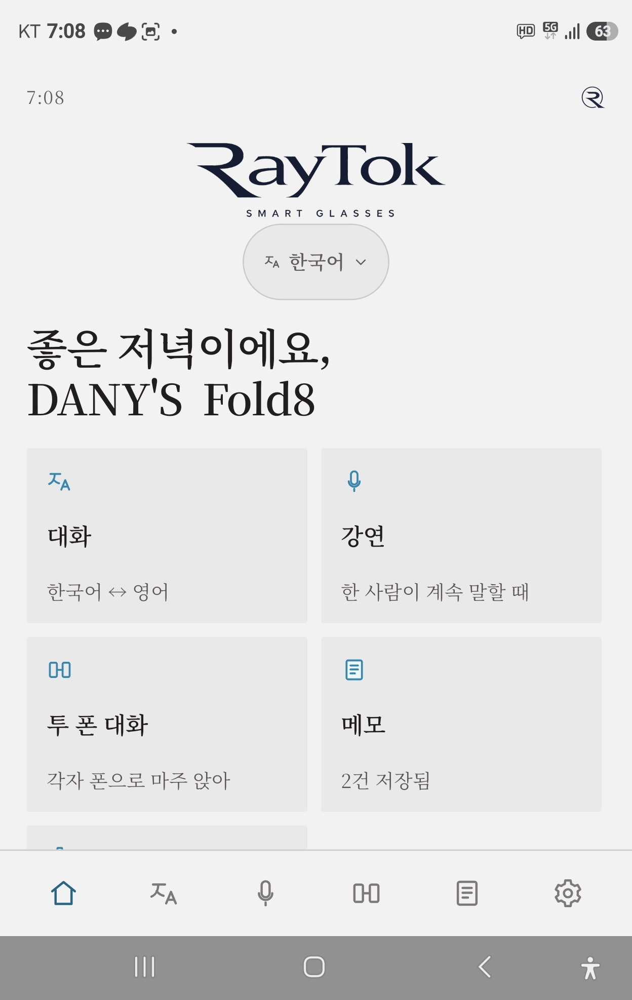
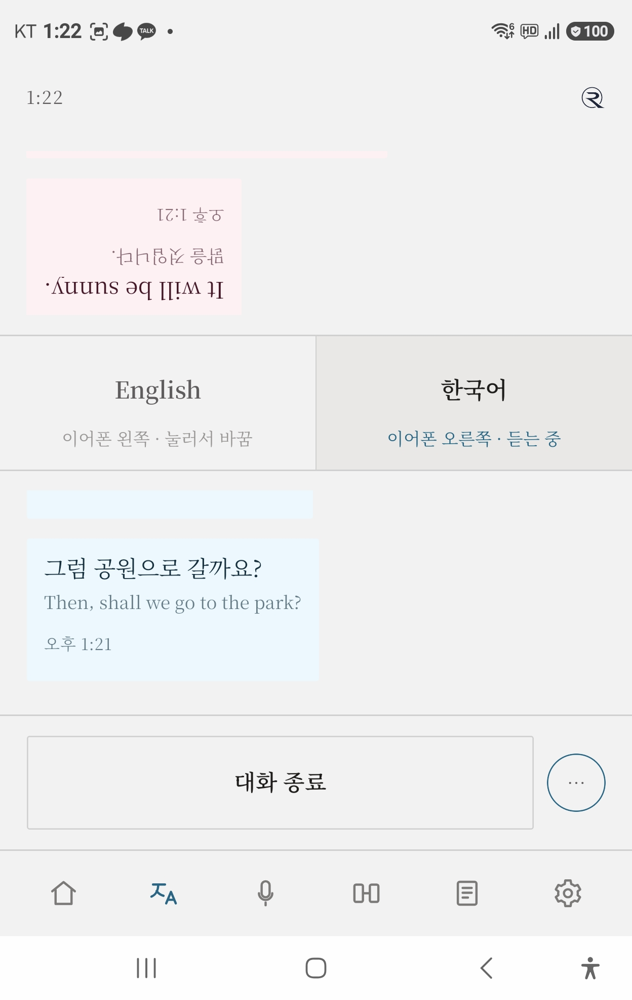
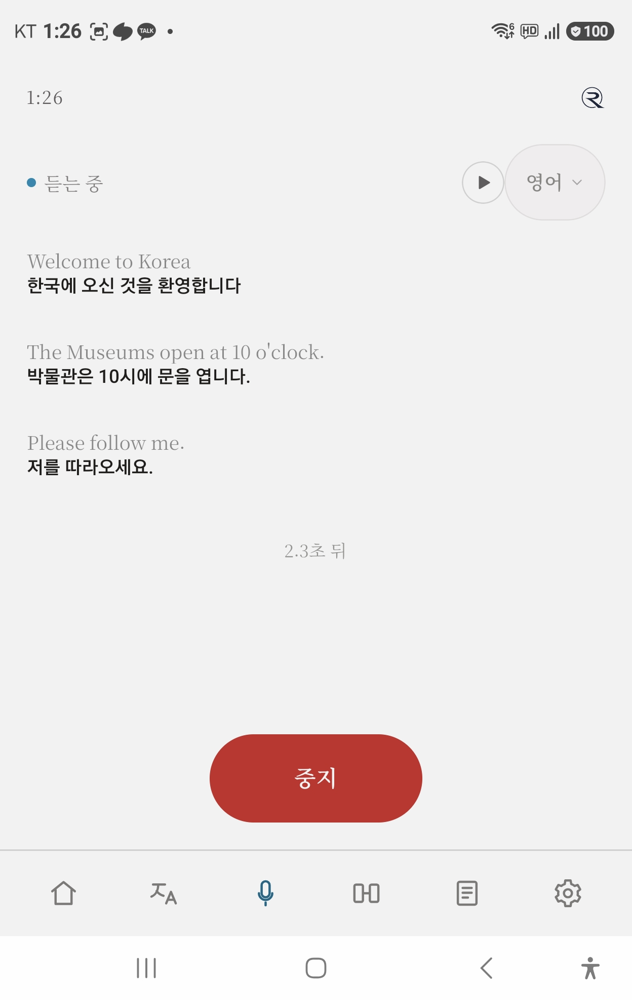
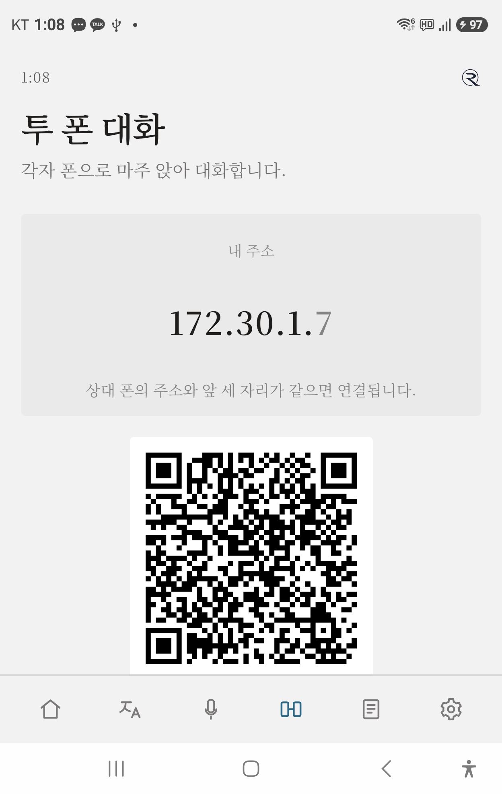
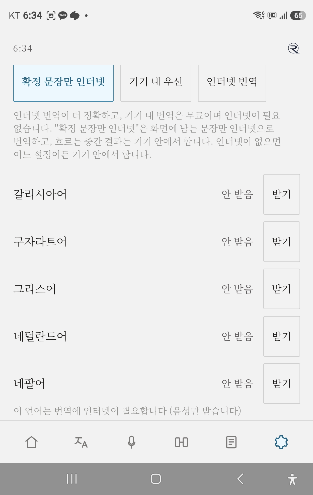

RayTok 사용설명서
v1 · 안드로이드 · 앱 버전 1.0.0 · 2026-09-15
RayTok은 블루투스 이어폰·안경과 함께 쓰는 실시간 통번역 앱입니다.
이어폰 한 쌍을 한 짝씩 나눠 끼면, 왼쪽엔 상대 언어, 오른쪽엔 내 언어가 들립니다 — 폰 하나로 두 사람이 대화합니다.
언어 팩을 받아 두면 인식·번역·소리가 폰 안에서 돌아 인터넷 없이 씁니다.
1. 준비
설치
이어폰·안경 연결
- 폰 설정 → 블루투스 → 이어폰(또는 안경) 연결
- 삼성 폰은 Dolby Atmos를 끄세요 — 켜져 있으면 좌우 소리가 갈리지 않습니다. 설정 → 소리 및 진동 → 음질 및 음향 효과 → Dolby Atmos 끔. 접근성의 "모노 오디오"도 꺼 둡니다.
첫 실행 — 처음 설정 1 / 2
- 쓸 언어를 고르세요 — 내 언어와 상대 언어를 고르면 그 언어 팩(번역·인식)을 바로 받습니다. 한국어·영어는 자동으로 받습니다. 인터넷이 없으면 나중에 설정에서 받을 수 있습니다.
- 다음: 좌우 확인 → 이어폰 좌우를 확인하세요 — 이어폰을 양쪽 다 낀 채 누르면 "왼쪽"은 왼쪽에서만, "오른쪽"은 오른쪽에서만 들려야 합니다. 양쪽에서 다 들리면 Dolby Atmos·모노 오디오를 끄고(소리 설정 열기) 다시 확인합니다.
- 시작하기. 이 화면은 설정 → 시스템 → 처음 설정 다시 보기로 언제든 다시 엽니다.
2. 홈 화면

홈 — 카드 다섯 개와 앱 언어 표시
- 앱 언어: 위쪽의 언어 표시를 누르면 화면 글자 언어를 바꿉니다(기본 한국어).
- 내 언어는 한 곳(대화 화면의 내 칸, 또는 설정)에서 바꾸면 대화·강연·메모가 모두 따라옵니다.
- 메뉴 카드: 대화 / 강연 / 투 폰 대화 / 메모 / 설정. 아래 탭도 같습니다. 언어 팩은 설정 → 언어 안에 있습니다(7장).
3. 대화 — 폰 하나로 두 사람

대화 — 위 절반은 상대 쪽(거꾸로), 아래 절반은 내 쪽
마주 보고 대화할 때. 이어폰을 한 짝씩 나눠 끼고 폰을 둘 사이에 둡니다.
- 대화에 들어가면 위에 상대방, 아래에 내 언어 칸이 있습니다. 칸을 길게 누르면 언어를 고릅니다.
- 대화 시작을 누르고 그냥 대화합니다. 끝나면 대화 종료.
- 누가 말하는지는 앱이 알아서 가립니다. 엉뚱하게 잡히면 차례 칸을 한 번 눌러 "지금 내가 / 상대가 말한다"를 정해 줍니다.
소리 경로 (자동, 고를 것 없음)
- 상대가 말하면 → 번역이 이어폰 오른쪽(내가 낀 쪽)으로
- 내가 말하면 → 번역이 이어폰 왼쪽(상대가 낀 쪽)으로
- 폰 스피커는 조용합니다. 이어폰이 없으면 폰 스피커로 나옵니다.
- 화면: 위가 상대(상대가 읽기 좋게 거꾸로), 아래가 나. 번역은 크게, 원문은 작게.
- 양쪽 귀에서 다 들리면 화면 맨 위의 "양쪽 귀에서 다 들리면 → Atmos 끄기" 줄을 누르면 소리 설정이 열립니다.
- 오른쪽 위 더보기에서 이 대화 저장 — 지금까지의 대화가 메모로 들어갑니다.
4. 강연 — 한 사람이 계속 말할 때

강연 — 위에 원문, 아래에 번역이 문장 단위로 쌓입니다
강의·안내 방송·회의처럼 한쪽이 길게 말할 때. 중지를 누를 때까지 계속 번역합니다.
- 강연에 들어가 오른쪽 위 언어 표시에서 강연자 언어를 고릅니다(내 언어와 달라야 번역이 됩니다).
- 아래 가운데 단추로 시작 → 화면에 원문(작게) 위, 번역(굵게) 아래가 흐릅니다.
- ▶ 단추를 누르면 번역을 소리로 읽어 줍니다. 다시 누르면 멈추고, 또 누르면 멈춘 자리부터 이어 읽습니다. 밀리면 저절로 조금 빨라집니다.
- 끝나면 중지 → 저장(디스크 그림) 또는 삭제(휴지통).
- 문장이 끝날 때마다 그 문장을 통째로 다시 번역합니다 — 토막을 이어 붙이지 않아 자연스럽습니다.
- USB 마이크를 꽂으면 언어 표시 옆에 마이크 자동 / USB 마이크 선택이 나타납니다. 강연자에게 마이크를 가까이 둘 수 있습니다.
- 저장한 내용은 메모에서 다시 보고 읽어 줄 수 있습니다.
5. 투 폰 대화 — 폰 두 대, 각자 이어폰

투 폰 — 한쪽이 QR을 보여 주고, 다른 쪽이 찍습니다
각자 폰과 이어폰을 쓰고 마주 앉거나 떨어져서 대화합니다. 인터넷이 없어도 됩니다. 두 폰이 같은 Wi-Fi에 있거나, 한쪽이 핫스팟을 켜고 다른 쪽이 거기에 붙으면 됩니다.
- 한 사람이 투 폰 대화 → 연결 만들기. 화면에 QR과 주소·확인 코드가 나옵니다.
- 다른 사람은 투 폰 대화 → 상대 폰의 QR 찍기. QR을 못 찍으면 직접 입력에 주소와 확인 코드 6자를 넣고 연결.
상대 폰에 앱이 없으면 QR이 설치 페이지(raytok.kr/download)로 안내합니다.
- "연결됨"이 뜨면 대화 시작하기. 각자 자기 이어폰으로 듣고, 자기 폰 마이크로 말합니다. 끝나면 연결 끊기.
"이 네트워크는 인터넷에 연결되어 있지 않습니다" 창이 뜨면 → 유지(계속 연결)를 누르세요. 핫스팟은 폰끼리만 이어 주는 것이라 정상입니다.
연결이 끊겨도 내 쪽 기록은 그대로 남고, 못 보낸 줄은 다시 연결되면 보냅니다. 대화 내용은 두 폰 사이에서만 오갑니다 — 공용 Wi-Fi보다 핫스팟이 안전합니다.
6. 메모 — 음성 메모
- 메모 → 음성 메모 → 말하기 → 같은 단추가 중지로 바뀝니다 → 저장됩니다.
- 2초쯤 쉬어도 끊기지 않습니다. 중지해도 내용은 사라지지 않습니다.
- 강연·대화에서 저장한 것도 여기에 모입니다. 메모를 눌러 읽기로 소리 내어 들을 수 있습니다.
7. 언어 팩과 번역 방식

설정 → 언어 → 언어 미리 받기
- 설정 → 언어 → 언어 미리 받기에서 쓸 언어의 받기. 받아 둔 언어는 인터넷 없이 번역됩니다. Wi-Fi에서 받기를 권합니다(언어 하나 30MB 안팎).
- "받음"이면 인터넷 없이 됩니다. "일부만"이면 번역이나 인식 중 하나는 인터넷으로 합니다. 팩이 없는 언어는 인터넷이 있을 때만 됩니다.
- 번역 방식(같은 화면): 확정 문장만 인터넷(기본 — 화면에 남는 문장만 인터넷, 흐르는 중간 결과는 기기) / 기기 내 우선 / 인터넷 번역. 인터넷이 없으면 어느 설정이든 기기 안에서 합니다.
8. 라이선스
- 체험: 설치하면 바로 7일 체험이 시작됩니다.
- 번들 기기: RayTok과 함께 산 이어폰·안경을 한 번 연결하면 이 폰은 자동으로 인증되고, 그 뒤엔 기기 없이도 씁니다.
- 체험이 끝나면 화면이 잠기고 기기 안내가 나옵니다. 투 폰 대화에 손님으로 참여하는 쪽은 라이선스가 없어도 됩니다 — 상대 폰의 QR을 찍으면 됩니다.
9. 문제 해결
| 증상 | 해보기 |
|---|
| 이어폰·안경에서 소리가 안 남 | 통화 앱을 쓴 직후면 기기가 통화 모드에 남아 있을 수 있습니다. 블루투스를 껐다 켜거나 기기를 다시 연결하세요. 기기가 재생을 못 받는 상태면 앱은 폰 스피커로 냅니다. |
| 좌우가 안 갈림 (삼성) | Dolby Atmos 끄기(설정 → 소리 및 진동 → 음질 및 음향 효과), 접근성 → 청각 → 모노 오디오 끄기. 대화 화면 맨 위 줄을 누르면 바로 열립니다. |
| 인식이 늦거나 인터넷을 찾음 | 설정 → 언어 → 언어 미리 받기에서 그 언어가 "받음"인지 확인하세요. |
| 상대 언어가 엉뚱하게 잡힘 | 대화 화면의 차례 칸(내 쪽 / 상대 쪽)을 눌러 누가 말하는지 정해 주세요. 언어 자체는 칸을 길게 눌러 바꿉니다. |
| 투 폰 연결이 안 됨 | 두 폰이 같은 Wi-Fi인지, 한쪽 핫스팟에 다른 쪽이 붙었는지 확인하세요. "인터넷 없음" 창에서는 유지. 행사장 공용 Wi-Fi는 폰끼리 통신을 막는 곳이 많습니다 — 핫스팟을 쓰세요. 화면의 "내 주소" 앞 세 자리가 두 폰에서 같아야 합니다. |
| 문제를 알리고 싶다 | 설정 → 빌드 번호 5번 → 개발자 → 인식 기록을 메모로 저장. 그 메모를 보내 주시면 원인을 추측하지 않고 찾습니다. |
10. 지금은 안 되는 것
- 전화 통화 번역 — 안드로이드가 통화 소리를 앱에 주지 않습니다.
- 아이폰 — v1은 안드로이드 전용입니다.
- 이어폰·안경 마이크로 듣기 — 폰 마이크를 씁니다. USB 마이크는 강연에서 됩니다.
11. 개인정보
- RayTok에는 서버가 없습니다. 언어 팩을 받아 두면 음성·번역이 폰 안에서 처리됩니다.
- 인터넷이 있을 때는 번역 방식 설정에 따라 확정된 문장이 구글 번역으로 갈 수 있고, 팩이 없는 언어의 음성 인식은 구글 음성 서비스로 갑니다. 앱 운영자에게는 아무것도 가지 않습니다.
- 저장한 메모·강연 기록은 폰에만 남습니다. 자세한 내용: raytok.kr/privacy
문의: raytok.kr · 맨 위로